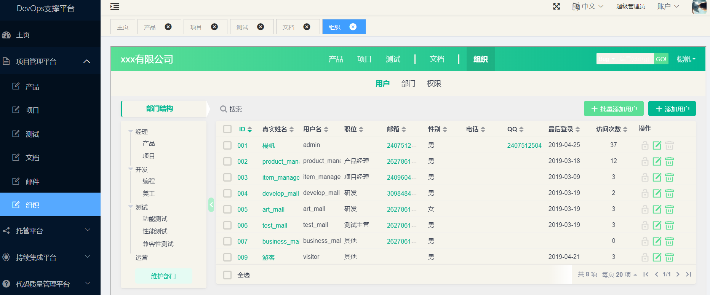
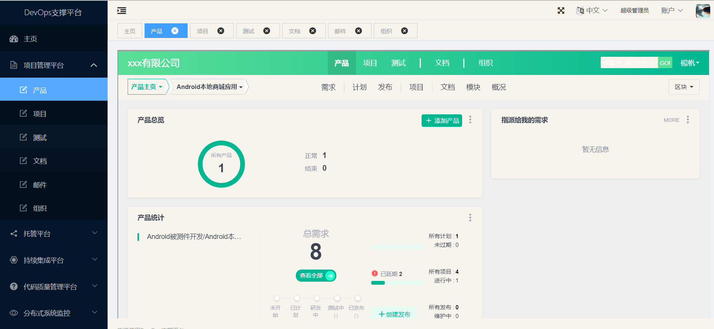
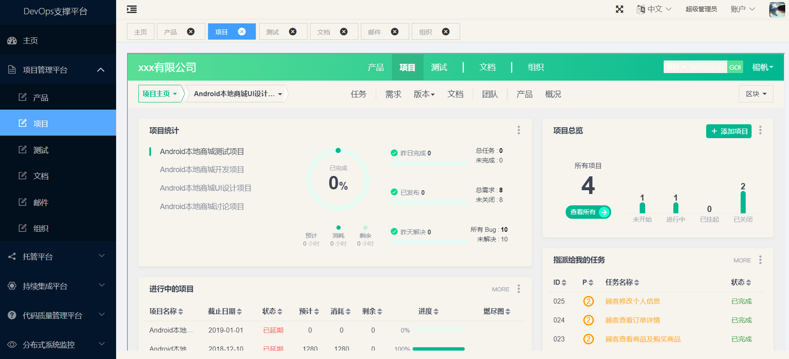
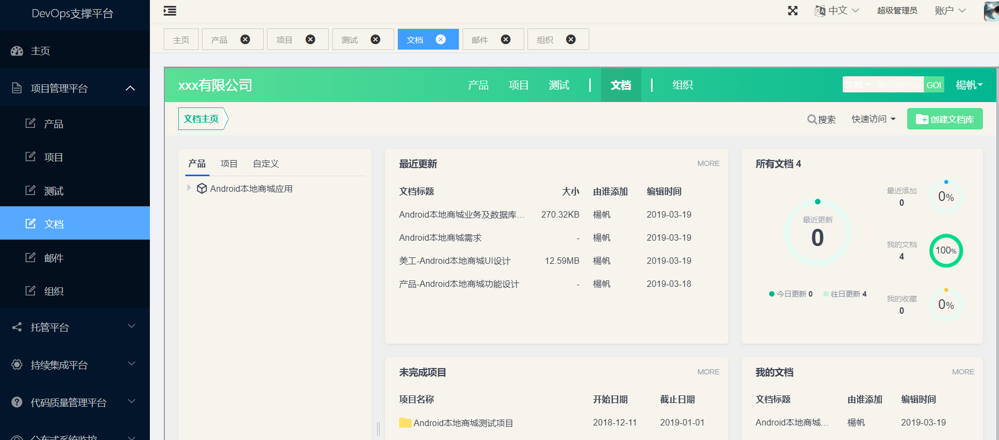

7.1、安装部署
注：如果需要开机自动启动，自行编写启动脚本服务。
1、下载
查看linux系统版本
uname -a
下载相应的包
安装
2、将安装包直接解压到/opt目录下
特别说明：不要 解压到别的目录再拷贝到/opt/，因为这样会导致文件的所有者和读写权限改变， 也不要解压后把整个目录777权限 。
可以使用命令：
sudo tar -zxvf ZenTaoPMS.7.3.stable.zbox_32.tar.gz -C /opt
3、Apache和Mysql常用命令
执行/opt/zbox/zbox start 命令开启Apache和Mysql。
执行/opt/zbox/zbox stop 命令停止Apache和Mysql。
执行/opt/zbox/zbox restart 命令重启Apache和Mysql。
更改apache和mysql端口
[root@bigdata2 opt]# /opt/zbox/zbox stop
Stop Apache success
Stop Mysql success
[root@bigdata2 opt]# /opt/zbox/zbox -ap 8088 -mp 3307
[root@bigdata2 opt]# /opt/zbox/zbox start
4、访问和登录禅道
启动 Apache和Mysql服务后，
浏览器直接访问 http://禅道服务器ip:apache端口即可访问和登录禅道。
访问禅道
192.168.222.129:8088
注：如果网页无法访问，请先关闭禅道所在电脑的防火墙和selinux再刷新网页访问试一下。
禅道默认管理员帐号是 admin，密码 123456。
5、Android本地商城被测件开发周期
/系统管理员：
删除/添加用户信息
2/10 35.2h 4.4天 2/10 35.2h 4.4天
/商户：
商品信息修改，订单详情及发货，修改个人信息
1/10 17.6h 2.2天 1/10 17.6h 2.2天 1/10 17.6h 2.2天
/顾客：
浏览商品及购买，查看订单详情，修改个人信息
1/10 17.6h 2.2天 1/10 17.6h 2.2天 1/10 17.6h 2.2天
8个功能，
一个月30天，一天8h，4周零2天，4周放8天假，一个月工作22天，共176h
产品经理
2018.11.1-2019.1.1
2018.11.1-2018.12.10，28天，
2018.11.1-11.5
产品需求讨论【管理员：2个需求，卖家：3个需求，买家：3个需求，共8个需求，3天24h】，
11.6-11.12
美工设计【买家11图，卖家10图，管理员4图，欢迎及登录4图，桌面1图，共30图】【5天40h，一天6图,1.3h】，
11.13-12.10
开发编码【20天160h，8个需求-20h-2天零4h】
2018.12.11-2019.1.1， 16天
产品测试【16天】，提bug
组织结构

6、禅道功能去除
我的地盘所有功能
产品-路线图
-动态
-多分支
项目-看板
-燃尽图
-更多
-动态
测试-套件
-用例库
统计所有功能
组织-动态
-公司
后台-首页
-自定义
-集成
-插件
-二次开发
-安全
-系统
自行修改。
禅道原图：


改变后图：



